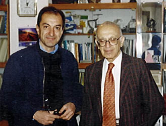

Safi Asfia

Mr. Asfia is a member of the Board of Trustees of Zirakzadeh Science Foundation. He is a mining engineer from the prestigious Paris Polytechnique. He has learned computer programming when he was in his 70's and has written a program for celestial bodies calculations for everyday use of astronomers.